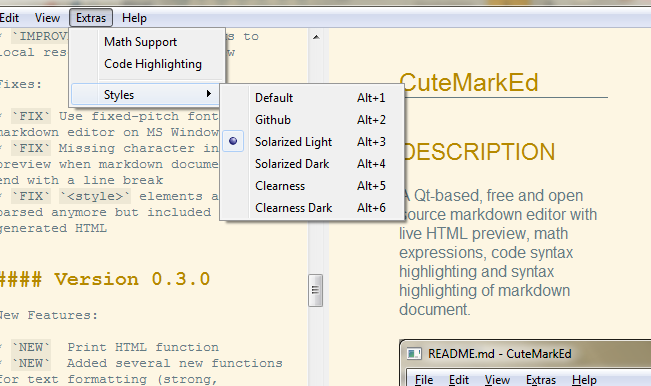
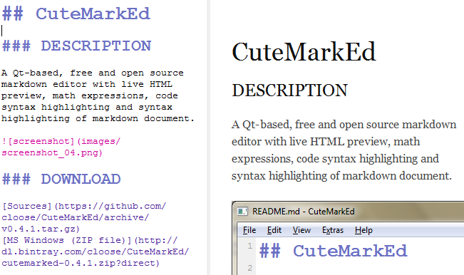
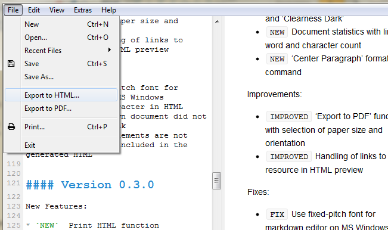
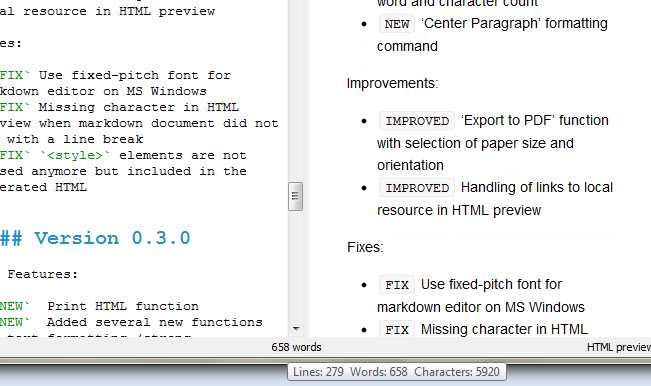
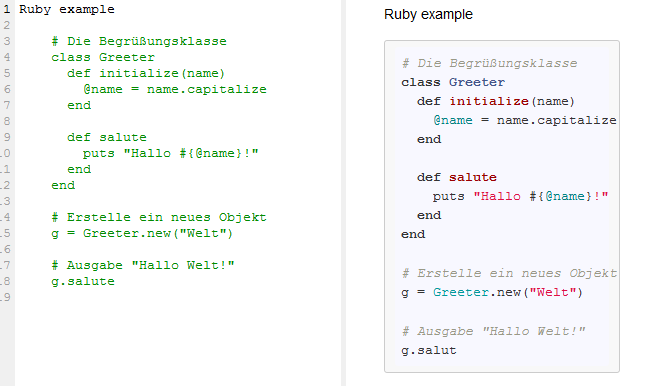

CuteMarkEd
A markdown editor with live HTML preview
DESCRIPTION
A Qt-based, free and open source markdown editor with live HTML preview, math expressions, code and markdown syntax highlighting.

Multiple styles

View and export the generated HTML in multiple included styles.
Live HTML Preview

Instantly updated preview of how the Markdown document looks like in HTML.
HTML and PDF Export

Export the document as HTML or PDF file.
Document statistics

See your word count as you work.
Code Syntax Highlighting

Support for highlighting syntax in code blocks.
Rendering in the HTML preview is provided by JavaScript library Highlight.js.
DOWNLOAD
Sources
MS Windows (ZIP file)
OpenSUSE 12.3 (RPM)
INSTALLATION
- Download the ZIP file
- Create a new directory at any place and copy the ZIP file to it
- Unzip the archive
NEWS
Version 0.6.1
IMPROVEDUpdated czech translation created by Pavel Fric
FIXFix Export to HTML with custom CSS stylesheet
Major Release 0.6.0 (June 25th, 2013)
NEWShow indicator in window title when the markdown document was modifiedNEWAdded menu entry and shortcut to toggle between HTML preview and HTML source viewNEWAdded option to display markers in editor for hard linebreaksNEWSave/restore main window size, position and stateNEWAdded support for opening markdown files in the editor per Drag & DropNEWAdded possibility to change the font used in the markdown editorNEWAdded support for custom CSS styles. The css files are loaded from a subdirectorystylesunder the application data location. On Windows this is:C:\Users\{User}\AppData\Local\CuteMarkEd Project\CuteMarkEd\styles
IMPROVEDLoad translation for text provided by QtIMPROVEDSupport more image formats in the HTML preview on WindowsIMPROVEDSSL support on Windows
FIXDo not crash application when a link with an empty href is clickedFIXMissing text in HTML previewFIXFix print menu entry for Windows usersFIXShow save changes dialog before opening another file
DEPENDENCIES
- Qt 5.x (LGPL v2.1)
- Discount 2.1.6 (3-clause BSD)
- PEG Markdown Highlight (MIT License)